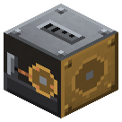

Волочильный стан
Эпоха 2Пар и механика

стоит

в работе
Слиток -> голая проволока (до 4 слитков за раз): медь 3, олово 3, золото 4, железо 4.
Слиток -> голая проволока (до 4 слитков за раз): медь 3, олово 3, золото 4, железо 4. Крутится от шкива рядом.
Параметры
| Эпоха | 2 — Пар и механика |
|---|---|
| Многоблок | нет |
| Привод | вал 2 л.с. |
| что делает | слиток -> голый провод IC2 (медь/олово 3, золото/железо 4) |
| энергия на входе | вал 2 |
| из чего | поршень, бронзовая шестерня, железный вал IC2, железные и стальные листы, волочильная доска |
Числа
| волочильный стан | 2 л.с. |
|---|
Кто кормит
- вал ← Паровая машина, Паровая машина высокого давления (трансмиссия)
Кого кормит
- машины Zavod её продукт не едят
Как устроено (из кода)
Волочильный стан на валу: пруток (слиток) протягивают через фильеры - выходит голая проволока (провод IC2 без изоляции). Пачкой: до BATCH слитков за цикл TIME тиков при полных оборотах. Пара не берёт - только оборот с вала через шкив. Медь -> 3 медных провода, олово -> 3 оловянных, золото -> 4 золотых, железо -> 4 железных (высоковольтных). Вручную (волочильная доска) выходит меньше - см. scripts. Слоты: 0 слитки, 1 проволока (выход).